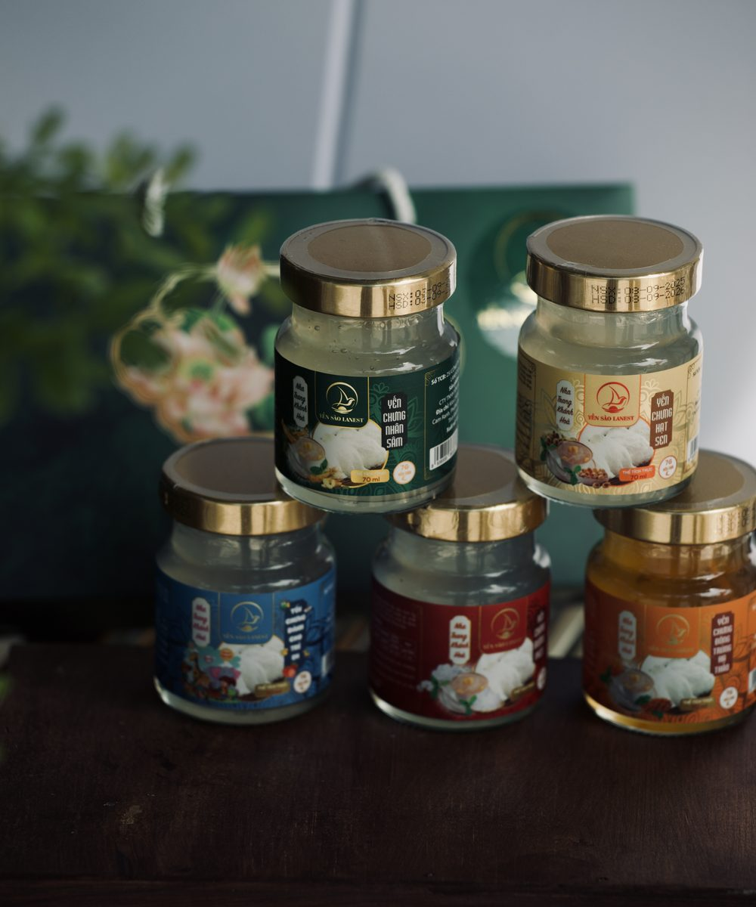
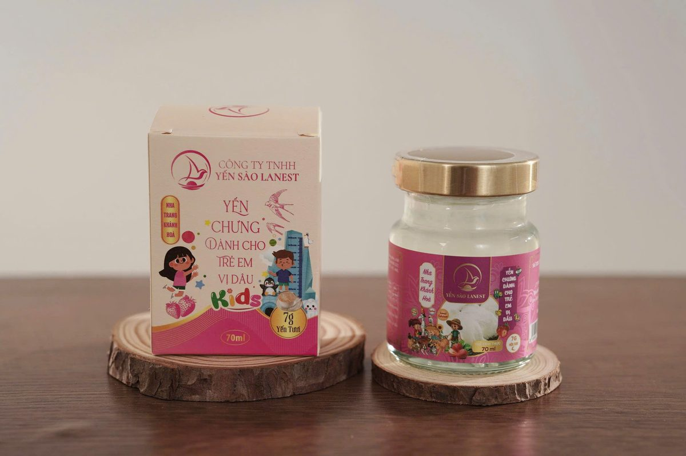

Đại Lý Mới Nhập Yến Hũ 7g: Chọn Vị Nào Cho Từng Nhóm Khách
Yến Sào Lanest · Đăng ngày 17/11/2026

Lần đầu nhập yến hũ 7g, câu đại lý hỏi nhiều nhất không phải "bao nhiêu thùng" mà là "lấy vị nào". Yến hũ 7g yến tươi của Lanest có 14 vị, nhưng anh chị không cần ôm đủ cả 14. Bài này chỉ cách nhìn khách của chính mình, chọn vị cho từng nhóm khách, rồi bổ sung dần theo những gì khách thật sự mua.
Năm vị yến hũ 7g: nhân sâm, hạt sen (trên), trẻ em, đường phèn, đông trùng hạ thảo (dưới)
1. Bắt đầu từ khách của mình, không phải từ kệ hàng
Mười bốn vị yến hũ 7g có chung một nền: hũ thủy tinh 70ml, mỗi hũ 7g yến tươi. Chỗ khác nhau nằm ở nguyên liệu chưng kèm và loại đường, nên chọn vị thực chất là chọn theo người uống. Trước khi lên đơn đầu tiên, anh chị trả lời ba câu:
- Ai hay ghé điểm bán của mình? Gia đình có con nhỏ, người lớn tuổi, dân văn phòng, hay khách tìm quà biếu.
- Họ mua để uống hay để biếu? Mua uống thì hay đổi vị; mua biếu thì cần vị dễ hợp nhiều người.
- Khách có hay hỏi chuyện đường không? Nếu có, phải có sẵn vị dùng đường isomalt.
Ba câu này quyết định bộ vị đầu tiên nhiều hơn bất kỳ lời khuyên chung chung nào.
2. Bảng chọn vị theo nhóm khách
Bảng dưới lấy theo cột "đối tượng sử dụng" trong tài liệu mô tả từng vị của Lanest. Cột cuối là cách nói gọn khi khách hỏi, chỉ nói vị đó dành cho ai, không hứa công dụng.
| Nhóm khách | Vị nên có | Cách nói khi tư vấn |
| Người lần đầu dùng yến, mua cho cả nhà | Đường phèn, tứ vị | "Đường phèn ngọt thanh, giữ vị yến nguyên bản; tứ vị nhiều nguyên liệu, cả nhà cùng dùng." |
| Người lớn tuổi, biếu ông bà | Hạt sen, đông trùng hạ thảo, gừng | "Hạt sen vị bùi nhẹ; đông trùng hạ thảo hợp làm quà; gừng cho người thích vị ấm." |
| Người đang hạn chế đường | Đường ăn kiêng, đông trùng hạ thảo ăn kiêng | "Hai vị này dùng đường isomalt thay đường phèn." Dừng ở đó, không nói thêm. |
| Dân văn phòng, người làm việc trí óc | Nhân sâm, hạt chia | "Nhân sâm đắng nhẹ, hậu ngọt; hạt chia lấm tấm hạt, dễ uống." |
| Chị em phụ nữ | Long nhãn, saffron, táo đỏ | "Long nhãn ngọt đậm, saffron nước vàng óng, táo đỏ ngọt kiểu trái cây." |
| Gia đình có con nhỏ | Trẻ em, trẻ em vị dâu | "Hai vị Lanest giới thiệu cho bé từ 3 tuổi trở lên; vị dâu dùng hương dâu tổng hợp, ghi rõ trên nhãn." |
Một vị có thể nằm ở nhiều nhóm. Đường phèn hợp gần như mọi người, và cũng là vị bán chạy nhất của Lanest, nên đó là vị nền của mọi đơn đầu tiên. Mô tả hương vị và thành phần chi tiết của từng vị có ở bài 14 vị yến chưng, chọn vị nào hợp với ai.
3. Ghép bộ vị cho đơn đầu tiên
Lanest cho trộn nhiều vị trong cùng một đơn hàng, nên đơn đầu không cần dồn vào một hai vị. Cách ghép đơn giản:
- Một vị nền: đường phèn.
- Hai, ba vị theo nhóm khách đông nhất của điểm bán, lấy từ bảng ở mục 2.
- Một vị "để thử" mà anh chị đoán khu mình sẽ thích, xem khách phản ứng ra sao.
Vài ví dụ để hình dung, không phải công thức cố định:
- Quầy thuốc: đường phèn, đông trùng hạ thảo, đường ăn kiêng. Ở quầy thuốc hay có người hỏi về đường.
- Cửa hàng gần trường, khu dân cư nhiều gia đình trẻ: đường phèn, trẻ em, trẻ em vị dâu, tứ vị.
- Bán online cho dân văn phòng: đường phèn, nhân sâm, hạt chia, saffron.
Số lượng mỗi vị và chính sách cho đại lý được trao đổi riêng qua hotline. Nếu đơn đầu rơi vào mùa cuối năm, đọc thêm bài đại lý yến chuẩn bị mùa Tết để chọn thêm hộp quà.

Yến chưng dành cho trẻ em vị dâu, hũ 70ml đi cùng hộp lẻ
4. Tư vấn đúng mực: nói "dành cho ai", không nói "chữa gì"
Khách tin đại lý vì đại lý nói đúng. Vài điều cần giữ khi giới thiệu vị:
- Dùng chữ "hỗ trợ", không dùng "công dụng" hay "chữa". Đây cũng là quy tắc trong sổ tay văn hóa của Lanest.
- Vị ăn kiêng chỉ nói "cho người đang hạn chế đường". Không nói "cho người tiểu đường". Người đang điều trị bệnh thì khuyên họ hỏi người điều trị của mình về lượng dùng.
- Nói đúng thành phần trên nhãn. Các vị dành cho người lớn có collagen thủy phân, chất xơ inulin, chất ổn định và hương yến tổng hợp; hai vị trẻ em không có collagen. Đừng gọi hũ 7g là "100% yến".
- Vị có mùi rõ thì mời khách thử một hũ trước. Gừng cay ấm khá rõ, nhân sâm đắng nhẹ; người chưa quen nên uống thử.
Và luôn kèm câu: Sản phẩm này không phải là thuốc và không có tác dụng thay thế thuốc chữa bệnh. Cách đọc nhãn từng dòng có trong bài cách đọc nhãn yến hũ.
5. Sau đợt đầu: ghi lại để nhập lại đúng vị
Đơn thứ hai mới là đơn cho biết khu mình chuộng vị nào. Trong tuần đầu bán, anh chị ghi lại ba thứ:
- Khách hỏi vị nào nhiều nhất, kể cả vị mình chưa có.
- Vị nào khách quay lại mua lần hai.
- Vị nào nằm trên kệ lâu.
Đơn sau tăng vị khách mua lại, giảm vị nằm lâu, thêm vị khách hỏi mà mình chưa có. Hàng nhập trước bán trước, xem hạn in trên bao bì từng lô, cất nơi khô ráo, tránh nắng, như hướng dẫn ở bài bảo quản yến hũ chưng sẵn.
6. Lanest hỗ trợ đại lý chọn vị thế nào
Đại lý mới không phải tự mò. Lanest có sẵn tài liệu mô tả ngắn từng vị, ghi rõ vị đó dành cho ai, viết theo cách nói "hỗ trợ". Đi kèm là hình ảnh, nội dung để đăng bán và bộ giấy tờ khi khách hỏi nguồn gốc. Lanest cũng giữ nguyên tắc không dùng danh sách khách của đại lý để bán trực tiếp, nên anh chị yên tâm xây tệp khách của mình. Điều kiện bắt đầu có trong bài làm đại lý yến sào Lanest, cam kết hai bên ở bài nguyên tắc hợp tác đại lý.
Câu hỏi thường gặp
Đại lý mới có phải nhập đủ 14 vị không?
Không. Lanest cho trộn nhiều vị trong cùng một đơn hàng, nên anh chị bắt đầu với vài vị hợp khách của mình rồi bổ sung sau.
Vị nào bán chạy nhất?
Đường phèn là vị bán chạy nhất của Lanest. Các vị còn lại chạy khác nhau tùy khu vực và tệp khách, nên anh chị theo dõi vài tuần đầu để chọn vị nhập lại.
Muốn biết chính sách cho đại lý thì hỏi ở đâu?
Anh chị gọi hotline 0258 6278 627 hoặc nhắn fanpage Yến Sào Lanest. Chính sách cho đại lý được gửi riêng cho từng người.